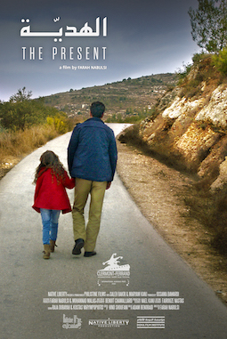

Research Project
Cinematic Counter‑Cartographies
Mapping Palestinian Women’s Cinema, Surveillance Space, and Cinematic Resistance
The Argument
Palestinian women filmmakers do not simply document occupation — they devise formal strategies that refuse it. This archive maps how Mai Masri, Annemarie Jacir, and Farah Nabulsi transform checkpoints, carceral spaces, and surveillance infrastructures into sites of cinematic resistance across twenty-five years of Palestinian film.
Read the full research statement →Featured Film

Farah Nabulsi
The Present
A father and daughter attempt to cross Checkpoint 300 to buy an anniversary gift. What should take minutes stretches across an entire day. Nabulsi compresses the spatial logic of occupation into a single ordinary errand — showing how a checkpoint can swallow a life, one hour at a time.
"Sometimes what is not shown is as powerful as what is." — Farah NabulsiView Film Analysis →
Where to Begin
Start with a Checkpoint
Four case studies — Qalandiya, Huwwara, Rachel, Container — each one a site of resistance and refusal in the cinematic archive.
Enter Checkpoints →Start with a Film
Nine films analyzed for how camera angles, editing, and sound design refuse the surveillance gaze they are forced to document.
Open Film Archive →Start with a Framework
Five typologies of surveillance space — architectural, digital, temporal, intimate, cinematic — that structure occupation beyond the checkpoint.
Enter Framework →